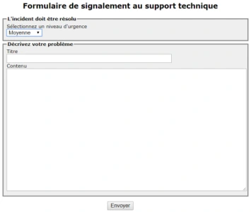
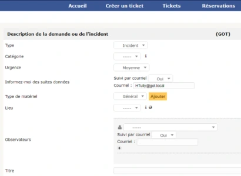
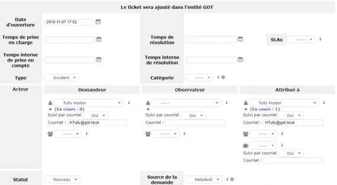
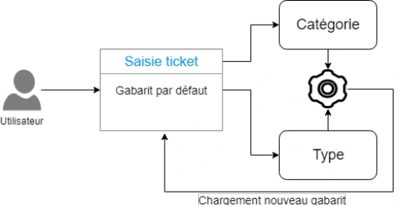
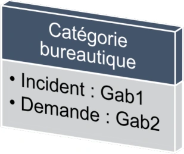
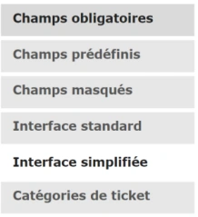
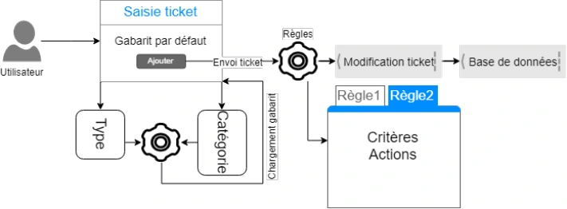
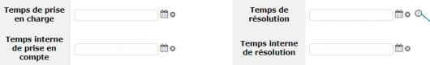
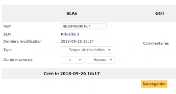
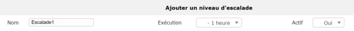

Transcription fidèle du support de formation, avec mise en forme adaptée à la lecture. Les identifiants secrets du laboratoire sont remplacés par une indication du formateur ; les coquilles techniques sont expliquées séparément dans le cours optimisé.










Assistance – Traitements automatisés des tickets
Ordre de création
• Matériel
Créer les catégories de ticket • Logiciel => Bureautique
• Logiciel => Infographiste
Créer les gabarits de ticket puis les • Personnalisation de l’interface • Champs obligatoires
lier aux catégories suivant le type • Champs masqués
Créer les SLAs •• TempsTemps dede résolutionprise en charge
Créer les escalades de SLAs •• CritèreAction (élévation(catégories,detype,priorité,tempsaffectionrestant…)à un niveau supérieur…)
Créer les règles métier • Critère (type (incident, demande), catégorie de ticket)
pour les tickets • Action (affectation technicien, SLA, priorité…)
19